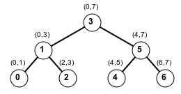
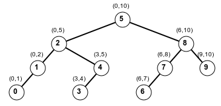

For each of the sample programs do the following:
-
From the Projects window, right-click either on
- the Miscell project
- the Source Packages entry
- the miscell package (this is most efficient)
- Select New → Other and from the list select Java Main Class (only need to go throuh Other once).
-
In the popup window (Name and Location), set the
Class Name something related to the algorithm of interest.
For example, you might be creating entries like this:
Class Name: LinearSearch1, LinearSearch2, ... package: miscell
- In some situations you'll want to create a simple Java Class, not Java Main Class.
- Replace the class content by the suggested content by copy/paste.
- In every case you will need the import statement:
import java.util.*;
- Run the program by locating it in Source Packages → miscell, right-clicking and selecting Run File.
- Repeated runs are easily done by clicking the "rerun" button in the output window.
- To make repeated runs even easier, select Customize in the drop-down below <default config>. In this window, use the Browse button to specify the Main Class. With this in place, you can use the "run project" button in the menu bar.
Linear Search
For example, consider simple linear search of an integer array for a given key. The following class representing a simple random linear search might be something like this:Coding
In order to create a general version which could be reused, we should consult what Java does in the Arrays class: There is no linear search algorithm, but there is a binary search. Here are two relevant static functions:int binarySearch(int[] a, int key) int binarySearch(int[] a, int fromIndex, int toIndex, int key)The "toIndex" argument name is misleading since the range is really between fromIndex and toIndex – 1, inclusive. Thus these two calls are equivalent:
java.util.Arrays.binarySearch(A, key); java.util.Arrays.binarySearch(A, 0, A.length, key);The int return value is supposed to be the position at which the key is found. If not found, a negative value is returned. These algorithm specifications suggest a more general way to write linear search, namely using our own package, util, and our own class MyArrays with two versions:
util.MyArrays.linearSearch(int[] a, int key) util.MyArrays.linearSearch(int[] a, int fromIndex, int toIndex, int key)We should also consider what to do if the latter of these calls is provided with invalid arguments such as these:
linearSearch(A, -3, 2, 15); linearSearch(A, 3, 2, 15);In these cases, we want to throw an Exception. A few tests of Arrays.binarySearch leads us to add this starter code:
if (fromIndex < 0 || toIndex < 0 || fromIndex > toIndex) { throw new IllegalArgumentException(); }
Class Name MyArrays package utilwith this content:
package util; public class MyArrays { public static int linearSearch(int[] A, int fromIndex, int toIndex, int key) { if (fromIndex < 0 || toIndex < 0 || fromIndex > toIndex) { throw new IllegalArgumentException(); } int i; for (i = fromIndex; i < toIndex; ++i) { if (key == A[i]) { return i; } } return -1; } public static int linearSearch(int[] A, int key) { return linearSearch(A, 0, A.length, key); } }
Other Java types
Consider expanding the linear search algorithm to other types such as float or String. These two are very different because float, like int is a primitive type and String is an Object. With respect to float, or any of the other primitive types, we have to write separate functions for each even though they effectively do the same thing. Regarding Object types, such as String, we would want a version like this:package util; public class MyArrays { // ... public static int linearSearch( Object[] A, int fromIndex, int toIndex, Object key) { if (fromIndex < 0 || toIndex < 0 || fromIndex > toIndex) { throw new IllegalArgumentException(); } int i; for (i = fromIndex; i < toIndex; ++i) { if (key.equals(A[i])) { return i; } } return -1; } public static int linearSearch(Object[] A, Object key) { return linearSearch(A, 0, A.length, key); } }
Abstract time for linear search
Regarding the notion of "abstract time" we usually say to "count the number of comparisons" to get a measure of the actual time. There are several deviations from reality:- we're overlooking any setup, like initializing the variables found and i, as well as other repetitive features, like incrementing i comparing it to the size
-
We're ignoring the actual cost of a comparison.
The Object comparison
A[i].equals(key)
say, for String type, is not constant and is likely to be more time-consuming than comparison of primitive types.
Analysis of Linear Search
The worst case is if the element is not found or is found at the end of the search in which case there are n comparisons. The best case is that the thing you're looking for is in the first slot and so there's only one comparison. We say:- the best case is 1 comparison
- the worst case is n comparisons
Average case for linear search
A simple guess might be to take the average of the best and worst, getting (n+1)/2. This answer turns out to be correct, but we must derive it more methodically. First of all, we need to make the assumption that the search is successful. Why? Consider an array of size 10, holding arbitrary integers and the key is an arbitrary integer. Given that there are about 4 billion 32-bit integers, the probability that our key is one of these 10 is effectively zero! In addition, we will assume that the key is equally likely to be found at each of the n positions. Using this notion, the average cost is:
( total cost for finds at all positions ) / number of positions
The cost for finding at position i is (i+1), for values
i = 0 ... n-1. Therefore we derive:
| 1 + 2 + ⋅⋅⋅ + n | n*(n+1)/2 | n + 1 | |||
| average cost = | |
= | |
= | |
| n | n | 2 |
Language of Asymptotics
Asymptotics has to do with describing the behavior of functions, specifically algorithmic timing functions, for arbitrarily large problem sizes. Often a problem size can be characterized by a single parameter n, e.g., the size of an array.Big-O Notation
We would really like to present information about this algorithm which ignores the constants. The "big O notation" and other complexity terminology allows us do precisely that. We say:T(n) = O(f(n)) or T(n) is O(f(n))if
there are positive constants C and k, such that
The big-O notation is simply a convenience for expressing the relation
between an unknown "timing function", T(n), and a known
reference function, f(n).
In reality O(f(n)) is a class of functions,
of which T(n) is a member. Nevertheless, it is convenient to
be able to make statements like this
T(n) ≤ C * f(n) for all n ≥ k
"the worst case time for such-and-such-algorithm is O(n*log(n))"
and have a rigorous basis for what you're saying.
The idea of "n ≥ k" in the definition means
eventually, i.e., if we ignore some initial finite portion.
For example, suppose
T(n) = n + 100We can say:
T(n) ≤ 101 * n, for all n ≥ 1but we can also say
T(n) ≤ 2 * n, for all n ≥ 100getting a "better" asymptotic constant, C, in the sense that it is smaller (we can always make it larger). In either case we have proved that
n + 100 = O(n)by finding constants C and k which make the definition statement work.
Linear Search in big-O terms
Going back to linear search we observed that when counting comparisons:the best case is 1In big-O terminology, we would say this about linear search:
the worst case is n
the average case is (n+1)/2 = ½ n + ½
the best case time is O(1)
the worst case time is O(n)
the average case time is O(n)
Binary Search
Binary search searches a sorted array in the most efficient way possible. This algorithm employs a simple example of a divide-and-conquer strategy in which we subdivide the problem into equal-sized "sub-problems". The idea is simple: compare the key to the "middle" element, if not equal, either look left or look right portion based on whether the key is less than, or greater than, the middle element.First Binary Search Implementation
This algorithm expresses itself most naturally in a recursive manner based on the way I say:
search the whole array invokes search of one half or another.
In order to express the recursive nature, the parameter of the algorithm
must allow arbitrary beginnings and ends.
Our inital coding might look something like this:
int binarySearch(int[] A, int fromIndex, int toIndex, int key) { if (fromIndex == toIndex) { return - 1; } int mid = (fromIndex + toIndex) / 2; if (key == A[mid]) { return mid; } // else if (key < A[mid]) { return binarySearch(A, fromIndex, mid, key); } // else (key > A[mid]) return binarySearch(A, mid+1, toIndex, key); }
Binary Search Visitation tree
Lay out the array positions that the algorithm would visit in a binary tree, where the root is the middle of the array, the left and right subtrees are generated by searches of the left and right subarrays, respectively. Here are the binary search trees for arrays of size 7 and 10, resp.:|  |  |
Algorithmic correctness proof by induction
The proof uses a form of induction called strong induction, whereby we assume true the thing we want to prove for all values (within a suitable range) up to that point. Consider the execution of: The execution ofint pos = binarySearch(A, fromIndex, toIndex, key)We want to say that:
- if pos ≥ 0 then fromIndex ≤ pos < toIndex and A[pos] == key
- if pos < 0 then A[i] != key, for all fromIndex ≤ i < toIndex.
a/bis expressed mathematically as the "floor" function flr, which simply truncates any decimal part.
flr(a/b)
Base case: len = 0
This means that toIndex == fromIndex. The key cannot be present in the array and the algorithm indicates failure.Inductive case: len ≥ 1
Because the array is sorted, it is obvious that the algorithm will work so long as:- fromIndex ≤ mid < toIndex
- the left (fromIndex,mid) and right (mid+1,toIndex) ranges both have fewer than len elements.
mid = (fromIndex + toIndex)/2 = (2*fromIndex + len)/2
= fromIndex + len/2, if len is even
= fromIndex + (len-1)/2, if len is odd
-
len is even
Because len is even and positive, we havemid = fromIndex + len/2, len/2 > 0, len/2 < len
Computing the length of both sides gives:mid - fromIndex = len/2 < len toIndex - (mid+1) = len - len/2 - 1 = len/2 - 1 < len
-
len is odd
Because len is odd we havemid = fromIndex + (len-1)/2, (len-1)/2 ≥ 0, (len-1)/2 = len/2 < len
To get the exact numbers, it's better to express len = 2*k + 1, where k = len/2. Computing the length of both sides gives:mid - fromIndex = (len-1)/2 = k = len/2 < len toIndex - (mid+1) = len - (len-1)/2 - 1 = 2*k+1 - k - 1 = k = len/2 < len
- when len is even, the split is unequal, the left side having len/2 elements and the right side one less.
- when len is odd, the split is equal, both sides having len/2 elements
Logarithms in analysis
Logarithms, particularly base-2 logarithms are important because they represent the number of times n things can be halved. In particular, there are roughly log2n term in this sequence:n, n/2, n/4, ..., 1The definition of logarithm to the base b is:
x = logbn means bx = n, i.e., blogbn = nThe most common bases are these:
- base 2, used in computer science
- base 10, used in other sciences
- base e = 2.718..., used in mathematics, where e is the base of the natural logarithm, the so-called Euler's number which is one of the fundamental constants of mathematics, like π
blogb2 = 2 (blogb2)x = b(logb2)*x = 2xUsing x = log2(n),
blogb2 * log2n = 2log2n = nThis means, according to what the definition of log:
logbn = logb2 * log2n (think of the 2's as "cancelling out"), or simplifying,
log2n = logbn / logb2
Therefore, regarding big-O logarithms of all bases are equal.
In scientific computations, log(n) is understood to be
the base-10 logarithm and ln(n) the natural logarithm.
In computer language library functions, log(n) often means
the natural logarithm and base-2 logarithm is usually written with
an explicit base. For example, in Java, the function Math.log
is the natural logarithm, but we can easily write the base-2 logarithm:
static double log_2(double x) { return Math.log(x) / Math.log(2); }
log n = log2n
Integer logarithms
In computational settings in which logarithms appear, they always appear in these integer formats:flr(log n) = the largest power of 2 so that 2power ≤ n ceil(log n) = the smallest power of 2 so that n ≤ 2powerFor example, flr(log 8) = 3, ceil(log 8) = 3 and flr(log 10) = 3, ceil(log 10) = 4.
Binary Search Worst Case
From an analysis perspective, with an array of size n > 1,n even => left side n/2, right side n/2 - 1 n odd => both sides have size (n-1)/2 = n/2Let T(n) = worst case number of comparisons in binary search of an array of size n
In the worst case, we would end up consistently exploring the left side with n/2 elements:
T(1) = 1 T(n) = 1 + T( n/2 ), n > 1Our claim is that T(n) = O(log n). In fact we want to prove:
T(n) ≤ 2 * log(n), n ≥ 2Look at a comparison of some computed values of T(n) and log(n)
T(2) = 2, log(2) = 1 T(3) = 2, log(3) = 1.x T(4) = 3, log(4) = 2 T(5) = 3, log(5) = 2.xObserve that the multiplier 2 satisfies the inequality we claim for each value.
Proof by induction.
Again, we use strong induction. We have verified that for base cases n = 2, 3, 4, 5 that:T(n) ≤ 2 * log(n), n ≥ 2Assume valid up to (but not including) n. This means that we can make the inductive assumption and assume this to be true:
T(n/2) ≤ 2 * log(n/2), n/2 < nThen the proof goes like this:
T(n) = 1 + T(n/2) (the recurrence) ≤ 1 + 2 * log( n/2 ) (substitute from inductive assumption) = 1 + 2 * (log(n) – 1) (properties of log) = 2 * log(n) – 1 (simple algebra) ≤ 2 * log(n) (becoming larger)The key algebraic step relies on the property:
log(a/b) = log(a) – log(b)which we are using like this:
log(n/2) = log(n) – log(2) = log(n) – 1However, because n/2 is truncated division, this last statement is not technically correct when n is odd. For simplicity, we'll ignore this technicality.
Demo program
It's useful to see a programmatic comparison of T(n) and log(n) as can be done with the following program:public class MainBS { static int T(int n) { if (n == 1 ) { return 1; } return 1 + T( n/2 ); } // base-2 logarithm static double log(double x) { return Math.log(x) / Math.log(2); } public static void main(String[] args) { for (int n = 2; n <= 32; ++n) { int t_val = T(n); double log_val = log(n); System.out.println("T(" + n + ")/log(" + n + ")\t" + (t_val/log_val)); } } }
T(2)/log(2) 2.0 T(3)/log(3) 1.2618595071429148 T(4)/log(4) 1.5 T(5)/log(5) 1.2920296742201793 T(6)/log(6) 1.1605584217036249 T(7)/log(7) 1.0686215613240666 T(8)/log(8) 1.3333333333333333 T(9)/log(9) 1.2618595071429148 T(10)/log(10) 1.2041199826559246 T(11)/log(11) 1.1562593052715513 T(12)/log(12) 1.1157717826045193 T(13)/log(13) 1.080952617709279 T(14)/log(14) 1.0505981401487743 T(15)/log(15) 1.023832099239262 T(16)/log(16) 1.25 T(17)/log(17) 1.22325271059113 |
T(18)/log(18) 1.1990623328406573 T(19)/log(19) 1.1770445668331913 T(20)/log(20) 1.1568910657987959 T(21)/log(21) 1.138351243484765 T(22)/log(22) 1.1212191210878772 T(23)/log(23) 1.1053236472875188 T(24)/log(24) 1.0905214599276576 T(25)/log(25) 1.0766913951834827 T(26)/log(26) 1.0637302677668157 T(27)/log(27) 1.0515495892857623 T(28)/log(28) 1.0400729883825475 T(29)/log(29) 1.0292341623021721 T(30)/log(30) 1.018975235452531 T(31)/log(31) 1.0092454329104992 T(32)/log(32) 1.2 |
Improvement on the worst-case order constant
In the above sections we proved thatT(n) ≤ 2 * log(n), n ≥ 2Can we do better? It is not true that T(n) ≤ log(n) per se, but the proof above can easily be adpated to prove this inequality:
T(n) ≤ log(n) + 1, n ≥ 2Thus, including the extra "1" term the constant multiplier is effectively 1, which is an improvement over the multiplier 2 indicated above.
Order class hierarchy
The functions which characterize algorithm timing tend to fall into a few common ones:O(1) — constant time O(log n) — logarithmic time O(n) — linear time O(n * log n) O(n2) — quadratic time O(n2 * log n) O(bn) — each base b generates a distinct order classThese order classes are upwardly inclusive, i.e., if T(n) = O(log n), then of course, T(n) = O(n). We're usually interested in the "best fit" in the sense of finding the smallest order class to which T(n) belongs. In order to characterize the "best fit" of an order class, we need two other notions:
Lower bound: Ω
We say:T(n) = Ω(f(n)) (or T(n) is Ω(f(n)))if there are positive constants C and k, such that
T(n) ≥ C * f(n), for all n ≥ k
Exact bound: Θ
We say:T(n) = Θ(f(n)) (or T(n) is Θ(f(n)))if
T(n) = O(f(n)) and T(n) = Ω(f(n))
This means that there are positive constants
C1, C2 and k, such that
C1 * f(n) ≤ T(n) ≤ C2 * f(n), for all n ≥ kThe Θ concept gives the precise sense to the notion of "order class" because it completely characterizes the behavior of a timing function relative to a reference function up to a constant multiple.
Order Summary
Officially there are three considerations.- O: upper bound, meaning "we can do at least this well" up to a constant factor
- Ω: lower bound, ignoring constant factors, meaning, "we cannot expect to do better than this" up to a constant factor
- Θ: characterization of the run-time behavior, up to a constant factor
Other algorithmic terminology
Asymptotic dominance of one function by another is expressed by the little-o notation:T(n) = o(f(n))This means that for every c (no matter how small), there is a k such that
T(n) ≤ c * f(n), n ≥ kFor the most part this means the following:
limn → ∞ T(n)/f(n) = 0Asymptotic dominance expresses the relationship of the reference functions in the order class hierarchy above:
1 = o(log(n)) log(n) = o(n) n = o(n2) n2 = o(2n) 2n = o(3n) ...The first of these relations, log(n) = o(n), is proved using L'Hôpital's rule from calculus, substituting a continous variable x for the integer n:
limx → ∞ log2(x)/x = limx → ∞ log2(e) * ln(x)/x = limx → ∞ log2(e) * ln′(x) / x′ = limx → ∞ log2(e) * 1/x / 1 = limx → ∞ log2(e) / x = 0Asymptotic equality is written this way:
T(n) ≈ (f(n))and it means: limn → ∞ T(n)/f(n) = 1 The "wavy" equal lines suggest that these two functions are essentially the same for large values. For example, in a polynomial function, we can effectively ignore all but the highest order term. For example, if
T(n) = 100 * n + 200 * n2 + 3 * n3then
T(n) ≈ 3 * n3Unfortunately the Weiss textbook does not define this relation. Asymptotic equality is, in some sense, similar to the exact bound Θ, except that it gives a precise order constant, which is often of interest when you want to compare two timing functions within the same order class. For example, let
W(n) = worst case time for linear search
A(n) = average case time for linear search
Both functions are exactly linear time and we would write:
A(n) = average case time for linear search
W(n) = Θ(n) A(n) = Θ(n)However, the order constants are different and this is expressed using ≈:
W(n) ≈ n A(n) ≈ ½ n
Binary Search average case
The average case timing is more complicated. As in the case of linear search, we assume a successful search, and that each of the array positions are equally likely to hold the search key. We are mostly interested in getting some sense about how much better the average case might be, and proving that it is still logarithmic. Technically we want to prove the lower bound:
Average binary search time(n) = Ω(log(n))
Combined with the fact that the average time can only be better
than the worst-case time, which is
O(log(n))
we can then conclude that
Average binary search time(n) = Θ(log(n))
Additionally we want to get some idea about what the order constant might be.
Counting the total number of comparisons
In order to compute the average number of comparisons, we need to find a way to compute the total number of comparison for all possible nodes in the positional visitation tree. The level of a node is its distance from the root. The root, at level 0, counts for 1 comparison. Both of its children count for 2 comparisons each, etc. Thus,Total comparisons = ∑all nodes at level i (i+1)In general, at level i, if it is full, there will be 2i children, each contributing (i+1) comparisons. A binary tree is perfect if every level is full. In general, the binary search position visitation tree will not be perfect, but it can be argued that
- The levels 0 to flr(log n)-1 are all full: thus a total of L = flr(log n) levels are full.
- The maximum level of a node is flr(log n) (which may not be full)
| flr(log(7)) = 2 | flr(log(10)) = 3 |
Computing a lower bound
The following is a useful expression which gives total number of comparisons in a perfect tree with of L levels (levels 0 to L-1):Comparisons(L) = 1 + 2*21 + 3*22 + ... + L*2L-1 = (L-1)*2L + 1Using this equation we can derive a lower bound on the number of comparisons for binary search. Using L = flr(log n), we get
total comparisons ≥ Comparisons( flr(log n) )
= ( flr(log n) - 1 ) * 2flr(log n) + 1
The flr(log n) expression truncates the decimal part of log(n) and so
it will subtract away less than 1 from log(n), i.e.,
flr(log(n)) > log(n)-1Replacing flr(log n) by log(n)-1 and doing the algebra, we get
total comparisons > ( log(n) - 2 ) * 2log(n) - 1 + 1
= log(n) * 2log(n) - 1 - 2log(n) + 1
= ½ * n * log(n) - n + 1
Dividing the total comparisons by n gives the average, i.e.,
average comparisons > ½ * log(n) - 1 + 1/n > ½ * log(n) - 1Therefore, the average number of comparisons is Ω(log(n)).
Exact bounds
Going one step further, we indicated above that:worst case comparisons ≤ log(n) + 1meaning that this inequality is, of course, true as well for the average comparisons. We conclude that
½ * log(n) - 1 ≤ average comparisons ≤ log(n) + 1We conclude that the average and worst-case comparisons are both Θ(log(n)) where the relevant muliplicative constant varies between ½ and 1.
Binary Search Implementations
First of all, create a simple test program to see what Java does. Create the main class JavaBinarySearch with this content:package miscell; import java.util.*; public class JavaBinarySearch { public static void main(String[] args) { Random rand = new Random(); int A[] = new int[20], key; for (int i = 0; i < A.length; ++i) { A[i] = rand.nextInt(A.length * 2); } key = rand.nextInt(A.length * 2); System.out.println("A (initial) = " + Arrays.toString(A)); Arrays.sort(A); System.out.println("A (sorted) = " + Arrays.toString(A)); System.out.println("key = " + key); int pos; pos = Arrays.binarySearch(A, key); System.out.println( "\n" + "binary search from Arrays class" + "\n" + "return = " + pos + "\n" + "found = " + (pos >= 0) + "\n" ); } }
| util.MyArrays — code added |
|---|
private static int count; public static int getCount() { return count; } public static void setCount(int count) { MyArrays.count = count; } public static int binarySearch(int[] A, int fromIndex, int toIndex, int key) { if (fromIndex == toIndex) { return - fromIndex - 1; } ++count; int mid = (fromIndex + toIndex) / 2; if (key == A[mid]) { return mid; } if (key < A[mid]) { return binarySearch(A, fromIndex, mid, key); } // else key > A[mid] return binarySearch(A, mid+1, toIndex, key); } public static int binarySearch(int[] A, int key) { return binarySearch(A, 0, A.length, key); }
Failed search value
We have modified the return value in case of failure. Before we wrote simplyreturn -1;
return - fromIndex - 1;
int insert_pos = - ret - 1;We can then correctly add key to the array, A (maintainin sortedness) if we
- shift the array contents in positions insert_pos to toIndex one to the right,
- set A[insert_pos] = key
| 0 | 10 | 20 | 30 | 40 |
| 0 | 1 | 2 | 3 | 4 |
(0,5), (3,5), (3,4), (3,3)The return value would be -4 which would be correctly interpreted as an insert position of 3. It's also important to ensure that the "extreme" cases work out correctly:
- A failed search for key = -10 will maintain fromIndex = 0 on all steps. At the end, the return value will be -1, signifying that the correct insert position is 0.
- A failed search for key = 50 will search this sequence of ranges: (0,5), (3,5), (5,5). At the end, the return value will be -6, signifying that the correct insert position is 5 (off the right end).
Counting comparisons
Unlike linear search, there are, in reality, one or two actual comparisons, but we ignore that issue and declare these as one comparison. Also unlike linear search, the position at which an element is found does not automatically relate to the number of comparisons made to find it. To support empirical analysis of binary search we need to create a programmatic method for inserting "count code" in a non-obtrusive way. As you see below, a count variable introduced records each comparison. The problem is setting and getting this value. The idea is this:MyArrays.setCount(0); // initialize the counter prior to call binarySearch(A, ...); // run binary search int count = MyArrays.getCount(); // retrieve the count value
Error Checking
We've left out error checking code from binarySearch:public static int binarySearch(int[] A, int fromIndex, int toIndex, int key) { if (fromIndex < 0 || toIndex < 0 || fromIndex > toIndex) { throw new IllegalArgumentException(); } //... }
public static int binarySearch(int[] A, int fromIndex, int toIndex, int key) { if (fromIndex < 0 || toIndex < 0 || fromIndex > toIndex) { throw new IllegalArgumentException(); } return _binarySearch(A, fromIndex, toIndex, key); } private static int _binarySearch(int[] A, int fromIndex, int toIndex, int key) { if (fromIndex == toIndex) { return - fromIndex - 1; } ++count; int mid = (fromIndex + toIndex) / 2; if (key == A[mid]) { return mid; } if (key < A[mid]) { return _binarySearch(A, fromIndex, mid, key); } // else key > A[mid] return _binarySearch(A, mid+1, toIndex, key); }
Testing
To test out this user-created version, add the following code to the end of the main function in the BinarySearch class:MyArrays.setCount(0); pos = MyArrays.binarySearch(A, key); System.out.println( "\n" + "binary search from MyArrays class" + "\n" + "return = " + pos + "\n" + "comparisons: " + MyArrays.getCount() );
Supporting object types
The situation is more complicated than that of linear search for object types because binary search is based the comparability of objects, meaning that we have to be able to determine not just equality, but a less than/greater than inequality of elements. In particular the Java API for binarySearch supports the ability to pass in a user-defined comparator instead of using relying upon the innate comparability of elements. A comparator is always passed in with the parameter type:Comparator<? super T> c
public static int binarySearch( Object[] A, int fromIndex, int toIndex, Object key) { if (fromIndex == toIndex) { return - fromIndex - 1; } int mid = (fromIndex + toIndex) / 2; ++count; // optional counting code int comp = ((Comparable) key).compareTo(A[mid]); if (comp == 0) { return mid; } if (comp < 0) { return binarySearch(A, fromIndex, mid, key); } // else comp > 0 return binarySearch(A, mid+1, toIndex, key); } public static int binarySearch(Object[] A, Object key) { return binarySearch(A, 0, A.length, key); } // when a user-defined comparator is provided ... public static <T> int binarySearch( T[] A, int fromIndex, int toIndex, T key, Comparator<? super T> c) { if (fromIndex == toIndex) { return -fromIndex - 1; } int mid = (fromIndex + toIndex) / 2; ++count; // optional counting code int comp = c.compare(key, A[mid]); if (comp == 0) { return mid; } if (comp < 0) { return binarySearch(A, fromIndex, mid, key); } // else comp > 0 return binarySearch(A, mid + 1, toIndex, key); } public static <T> int binarySearch(T[] A, T key, Comparator<? super T> c) { return binarySearch(A, 0, A.length, key, c); }
int comp = ((Comparable) key).compareTo( A[mid] );
less than if comp < 0,
equals if comp == 0,
greater than if comp > 0.
In the latter case, when a comparator c is passed, the equivalent idea is to
make a comparison using this object as follows:
equals if comp == 0,
greater than if comp > 0.
int comp = c.compare(key, A[mid]);
Binary vs. Linear search
The problem with binary search is that, although the search time is much faster, the array must be sorted for it work. The best algorithms for sorting a random array have a run time of O(n * log n). So there is no advantage of binary search over linear search if every search is on a fresh array. Here is how we compare the two algorithms:| Linear Search | Binary Search | |
| |
|
|
| create array: | O(n) | O(n) |
| prepare array: | - | O(n*log(n)) |
| search array: | O(n) | O(log(n)) |
Integer exponentiation
We want to write an algorithm to compute xn for an integer n ≥ 0. The obvious linear-time algorithm involves repeated multiplication by x. A more subtle version uses the binary representation of the exponent. The basis of the algorithm is this:n = 2 * n/2, if n even n = 2 * n/2 + 1, if n oddThroughout this section, for convenience, we'll represent integer truncated division by simple division, i.e.,
n/2 is really flr(n/2)Using properties of exponents, we have:
x0 = 1 x1 = xand then we can write either:
-
n even: xn = (x2)n/2 n odd: xn = x * (x2)n/2
-
n even: xn = (xn/2)2 n odd: xn = x * (xn/2)2
public static double powA(double x, int n) { if (n == 0) return 1; if (n == 1) return x; if (n % 2 == 0) return powA( x * x, n/2 ); //else return x * powA( x * x, n/2 ); } public static double powB(double x, int n) { if (n == 0) return 1; if (n == 1) return x; double val = powB(x, n/2); if (n % 2 == 0) return val * val; //else return x * val * val; } public static void main(String[] args) throws Exception { double x = 2.0; int n = 10; System.out.println( "powA(" + x + "," + n + ") = " + powA(x,n) + "\n" + "powB(" + x + "," + n + ") = " + powB(x,n) ); }
- for powA: 1 multiplication to compute x * x, T(n/2) for the recursive call to n/2, 1 multiplcation afterwards.
- for powB: T(n/2) for the recursive call to n/2, 2 multiplcations afterwards.
T(0) = 0 T(1) = 0 T(n) = T(n/2) + 2, n ≥ 2It can be proved by induction that:
T(n) = O( log(n) )Note that we were careful not to write the powB function like this:
if (n % 2 == 0) return powB(x,n/2) * powB(x,n/2); else return x * powB(x,n/2) * powB(x,n/2);The reason is that it would make the recurrence relation this:
T1(0) = 0 T1(1) = 0 T1(n) = 2 * T(n/2) + 2The factor of 2 in front of T1(n/2) causes T1(n) to enter a different order class. It can be proved that
T1(n) = Θ( n )by inductively proving two inequalities
-
T1(n) ≥ n - 1, n ≥ 1
-
T1(n) ≤ 2*n - 2, n ≥ 1
The iterative version
However difficult you consider recursion, it is much more transparent when compared to an interative version. Here is the code:public static double powC(double x, int n) { double val = 1; while(n != 0) { if (n % 2 == 1) val *= x; n = n/2; x = x*x; } return val; }
In particular, an iterative algorithm uses variables which change state in order to control the iteration. A proof requires that you establish a loop invariant, which is a logical statement expressed using the program variables so that:
- it is initially true with the variable initializations
- assuming that it is true at some step, it remains true at the next step using the modified variable values
- when the loop is terminated, the invariant "proves" what you want the loop to compute.
b = x; p = n; double val = 1; while(n != 0) { if (n % 2 == 1) val *= x; n = n/2; x = x*x; }
val = bpThe additional annotated variables b (base) and p are needed to express the invariant because x and n change state. The invariant we want is this:
val * xn = bpIt is true initially. Using the values
val = 1, x = b, n = pwe have that
val * xn = 1 * bp = bpNow assume it is true up to a certain point and then consider the next iteration step. Let val′, n′, and x′ be the new values of val, n and x, respectively, then:
x′ = x * x
n′ = n/2
val′ = val * x, if n odd
= val, if n even
We must show:
val′ * (x′)n′ = val * xnThere are two cases:
- n even:
val′ * (x′)n′ = val * (x2)n/2 = val * x2*(n/2) = val * xn
- n odd:
val′ * (x′)n′ = val * x * (x2)n/2 = val * x2*(n/2) + 1 = val * xn
val * x0 = bp, i.e., val = bp